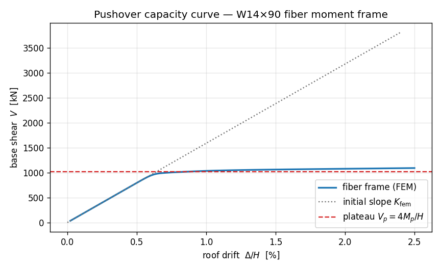

E10 — Pushover of a steel moment frame (fiber sections)¶
This is where the two threads finally braid together. On the
portal frame you pushed a frame sideways and read its
drift and base shear; on the
fiber moment–curvature page you built a
W14×90 out of fibres and watched one section walk from first yield to
its plastic moment $M_p$. Now we put that same fibre section into the
same kind of frame and push it past yield — at member scale — to trace
the structure's whole capacity curve: base shear $V$ against roof
drift $\Delta$, from the elastic rise, through the yield knee, onto the
plastic plateau.
The model is a single-bay portal moment frame. The two columns carry
the fibre W14×90 through a distributed-plasticity beam–column
element, so plasticity can spread along them and the four column ends can
form hinges. The beam is made deliberately strong and elastic, so the
frame fails in a clean column-sway mechanism — the textbook collapse
mode, and the one whose capacity we can write down by hand.
Two numbers anchor the whole exercise, both computable before we run anything:
- Elastic stiffness $K$ — the initial slope of the $V!-!\Delta$ curve.
- Plastic base shear $V_p$ — the plateau the curve flattens onto.
We state both up front, run the pushover, and check the captured curve against them at the end. Spoiler from the verified run: the slope lands within 2.7 % and the mechanism plateau within 1.9 % — and the small residuals are physics we can name, not noise.
The problem¶
──►●═══════════════════════════════════● ← roof (pushed in +x)
║ ║
║ ║ H = 3500 mm
║ columns beam ║
║ W14×90 fiber strong, ║
║ (force-based) elastic ║
██╨██ ██╨██
Fixed Fixed
└──────────────── B = 6000 mm ───────────┘
Columns : W14×90 fiber section, A992 steel (Fy = 345 MPa, E = 200 GPa)
Beam : elastic, made ~1000× stiffer than a column → near-rigid
Load : monotonic lateral push at the roof, displacement-controlled
to 2.5 % drift (87.5 mm)
Units — N, mm, MPa
We stay in apeSteel's native base — N-mm-tonne-s — for the whole page, exactly as on the fiber section example. Lengths in mm, forces in N, moments in N·mm (printed as kN·m by dividing by 10⁶), stiffness in N/mm, base shear in N (printed as kN). apeGmsh is unit-agnostic — pick one system and be consistent.
Target 1 — elastic stiffness $K$¶
While everything is elastic the frame is a one-storey shear frame. With a (near-)rigid beam, the beam pins the column tops against rotation, so each fixed-base column behaves like a fixed–fixed shear column of lateral stiffness $12EI_c/H^3$. Two columns in parallel give
$$ K \;=\; 2\cdot\frac{12\,E\,I_c}{H^{3}}. $$
With $I_c = I_x = 4.16\times10^{8}\ \text{mm}^4$ (the published W14×90
strong-axis inertia), $E = 200{,}000\ \text{MPa}$, $H = 3500\ \text{mm}$,
that's $K \approx 46{,}573\ \text{N/mm}$.
Target 2 — plastic base shear $V_p$¶
Push hard enough and the four column ends — two bases, two tops — each form a plastic hinge at the column's plastic moment $M_p = F_y Z_x$. With all four hinges open, the frame is a mechanism: it can sway with no further load increase. Equilibrium of that mechanism (a sway of the rigid-beam storey, four hinges each absorbing $M_p$) gives the plastic base shear
$$ V_p \;=\; \frac{4\,M_p}{H}, \qquad M_p = F_y Z_x. $$
With $Z_x = 2.57\times10^{6}\ \text{mm}^3$ and $F_y = 345\ \text{MPa}$, $M_p = 886.6\ \text{kN·m}$ and $V_p \approx 1013\ \text{kN}$. That's the height the capacity curve should flatten toward.
A real fibre plateau is soft, not flat
The $4M_p/H$ formula assumes ideal hinges that snap to $M_p$ and hold.
A distributed-fibre model does not give a razor-flat plateau:
plasticity spreads gradually along the columns, the hinges form one
after another, and — crucially — the Steel02 material strain-
hardens, so the curve keeps creeping upward past $V_p$. We'll read
the plateau where the mechanism just forms (≈ 1 % drift) and again
at the end of the push (2.5 % drift), and explain the gap between
them. A few-percent overshoot you can attribute to hardening is the
honest, correct result — not a bug to be hidden.
The whole model¶
Top to bottom. The genuinely new moves over the portal frame are the
fibre column section (from E3) wired into a forceBeamColumn
distributed-plasticity element, and a displacement-controlled push
walked out over many steps. Read it once; the walkthrough follows.
import numpy as np
import apeSteel
from apeGmsh import apeGmsh, Results
from apeGmsh.opensees import apeSees, OpenSeesModel
from apeGmsh.results.capture.spec import DomainCaptureSpec
from apeGmsh.opensees.section.fiber import RectPatch
import openseespy.opensees as opspy
# --- Problem data (N-mm-MPa, apeSteel native base) ---
H = 3500.0 # storey height [mm]
B = 6000.0 # bay width [mm]
SHAPE = "W14X90"
props = apeSteel.AISCv16Catalog().get_section_properties(SHAPE)
d = props.overall_depth_d
bf = props.flange_width_bf
tf = props.flange_thickness_tf
tw = props.web_thickness_tw
Sx = props.elastic_section_modulus_strong_axis_Sx
Zx = props.plastic_section_modulus_strong_axis_Zx
Ix = props.moment_of_inertia_strong_axis_Ix
A = props.gross_area_Ag
Fy = 345.0
E = 200_000.0
b_hard = 0.005 # small strain hardening (~elasto-plastic)
Mp = Fy * Zx # column plastic moment
My = Fy * Sx # column first-yield moment
# --- Closed-form targets ---
K_hand = 2.0 * 12.0 * E * Ix / H**3 # column-sway elastic stiffness
Vp_hand = 4.0 * Mp / H # 4 column hinges at Mp
# Strong elastic beam → near-rigid → clean column-sway mechanism
A_beam = A * 10.0
I_beam = Ix * 1000.0
# --- 1. Geometry + physical groups (the E1 portal) ---
with apeGmsh(model_name="pushover_frame") as g:
bl = g.model.geometry.add_point(0.0, 0.0, 0.0) # base left
br = g.model.geometry.add_point(B, 0.0, 0.0) # base right
tl = g.model.geometry.add_point(0.0, H, 0.0) # roof left
tr = g.model.geometry.add_point(B, H, 0.0) # roof right
col_l = g.model.geometry.add_line(bl, tl)
col_r = g.model.geometry.add_line(br, tr)
beam = g.model.geometry.add_line(tl, tr)
g.model.sync()
g.physical.add(1, [col_l, col_r], name="Columns") # both columns -> fiber
g.physical.add(1, [beam], name="Beam") # strong elastic beam
g.physical.add(0, [bl, br], name="Base") # fixed supports
g.physical.add(0, [tl], name="Roof") # push + drift readout
g.physical.add(0, [tr], name="RoofR")
g.mesh.sizing.set_global_size(H / 4.0)
g.mesh.generation.generate(1)
fem = g.mesh.queries.get_fem_data(dim=1)
roof_id = int(fem.nodes.select(pg="Roof").ids[0]) # controlled node tag
# --- 2. Build the OpenSees model through the typed bridge ---
ops = apeSees(fem)
ops.model(ndm=2, ndf=3) # 2-D frame: ux, uy, thetaz
transf = ops.geomTransf.Linear(vecxz=(0.0, 0.0, 1.0))
# Columns: a W14x90 fiber section -> force-based (distributed plasticity)
steel = ops.uniaxialMaterial.Steel02(fy=Fy, E=E, b=b_hard)
col_sec = ops.section.Fiber(patches=(
RectPatch(material=steel, ny=4, nz=1, yI=d/2 - tf, zI=-bf/2, yJ=d/2, zJ=bf/2),
RectPatch(material=steel, ny=24, nz=1, yI=-(d/2-tf), zI=-tw/2, yJ=d/2 - tf, zJ=tw/2),
RectPatch(material=steel, ny=4, nz=1, yI=-d/2, zI=-bf/2, yJ=-(d/2-tf), zJ=bf/2),
))
col_integ = ops.beamIntegration.Lobatto(section=col_sec, n_ip=5)
ops.element.forceBeamColumn(pg="Columns", transf=transf, integration=col_integ)
# Beam: strong elastic -> near-rigid
ops.element.elasticBeamColumn(pg="Beam", transf=transf, A=A_beam, E=E, Iz=I_beam)
ops.fix(pg="Base", dofs=(1, 1, 1)) # clamp both column bases
# Reference unit lateral load — displacement control scales it
ts = ops.timeSeries.Linear()
with ops.pattern.Plain(series=ts) as pat:
pat.load(pg="Roof", forces=(1.0, 0.0, 0.0))
ops.constraints.Transformation()
ops.numberer.RCM()
ops.system.BandGeneral()
ops.test.NormDispIncr(tol=1e-6, max_iter=30)
ops.algorithm.Newton()
n_steps = 120
drift_target = 0.025 * H # 2.5 % drift = 87.5 mm
dU = drift_target / n_steps
ops.integrator.DisplacementControl(node=roof_id, dof=1, dU=dU)
ops.analysis.Static()
# --- 3. Push step by step, capturing base shear + roof drift each step ---
spec = DomainCaptureSpec(opensees=ops)
spec.nodes(pg="Roof", components="displacement") # roof drift
spec.nodes(pg="Base", components="reaction_force") # base reactions
ops.run(wipe=False) # build, leave domain live
with ops.domain_capture(spec, path="pushover.h5") as cap:
cap.begin_stage("pushover", kind="static")
for k in range(n_steps):
if opspy.analyze(1) != 0:
print(f"non-convergence at step {k}")
break
cap.step(t=(k + 1) * dU)
cap.end_stage()
# --- 4. Read the capacity curve back, by name ---
om = OpenSeesModel.from_h5("pushover.h5", fem_root="/model")
with Results.from_native("pushover.h5", model=om) as r:
dx = r.nodes.get(pg="Roof", component="displacement_x")
rx = r.nodes.get(pg="Base", component="reaction_force_x")
drift = np.asarray(dx.values)[:, 0] # roof drift, every step
V = -np.asarray(rx.values).sum(axis=1) # base shear resists push
# --- Checks against the two closed forms ---
K_fem = np.polyfit(drift[:8], V[:8], 1)[0] # initial slope
def V_at(pct):
i = int(np.argmin(np.abs(drift / H * 100 - pct)))
return drift[i], V[i]
_, V_mech = V_at(1.0) # mechanism-formation plateau
_, V_end = V_at(2.5) # end of push
print(f"{SHAPE}: Mp = Fy*Zx = {Mp/1e6:.1f} kN*m")
print(f"K_hand = {K_hand:8.1f} N/mm (2*12*E*Ix/H^3)")
print(f"K_fem = {K_fem:8.1f} N/mm gap = {(K_fem-K_hand)/K_hand*100:+.2f} %")
print(f"Vp_hand = {Vp_hand/1e3:7.1f} kN (4*Mp/H)")
print(f"V@1.0% = {V_mech/1e3:7.1f} kN gap = {(V_mech-Vp_hand)/Vp_hand*100:+.2f} %")
print(f"V@2.5% = {V_end/1e3:7.1f} kN gap = {(V_end-Vp_hand)/Vp_hand*100:+.2f} %")
Run it. You should see:
W14X90: Mp = Fy*Zx = 886.6 kN*m
K_hand = 46572.6 N/mm (2*12*E*Ix/H^3)
K_fem = 45320.8 N/mm gap = -2.69 %
Vp_hand = 1013.3 kN (4*Mp/H)
V@1.0% = 1032.8 kN gap = +1.92 %
V@2.5% = 1089.6 kN gap = +7.53 %
Both targets land where the mechanics says they should:
- Elastic slope: −2.69 %. The captured initial stiffness is 45,321 N/mm against the hand value of 46,573 N/mm — the FEM is a hair softer, for two reasons we unpack below.
- Mechanism plateau: +1.92 %. At 1 % drift, just as the fourth hinge forms, the base shear is 1033 kN against $4M_p/H = 1013$ kN. The mechanism prediction is essentially exact.
- End of push: +7.53 %. By 2.5 % drift the curve has crept up to 1090 kN — the strain-hardening climb, not a flat plateau. More on this in a moment; this is the feature, not a bug.
Step 1 — The fibre column meets a distributed-plasticity element¶
steel = ops.uniaxialMaterial.Steel02(fy=Fy, E=E, b=b_hard)
col_sec = ops.section.Fiber(patches=(
RectPatch(material=steel, ny=4, nz=1, yI=d/2 - tf, zI=-bf/2, yJ=d/2, zJ=bf/2),
RectPatch(material=steel, ny=24, nz=1, yI=-(d/2-tf), zI=-tw/2, yJ=d/2 - tf, zJ=tw/2),
RectPatch(material=steel, ny=4, nz=1, yI=-d/2, zI=-bf/2, yJ=-(d/2-tf), zJ=bf/2),
))
col_integ = ops.beamIntegration.Lobatto(section=col_sec, n_ip=5)
ops.element.forceBeamColumn(pg="Columns", transf=transf, integration=col_integ)
The section is identical to the moment–curvature
page — three RectPatch blocks (top flange, web, bottom flange) laid out
in the section's local (y, z) frame, fibres stacked through the depth
so they resolve strong-axis bending. The patch corners come straight from
the apeSteel dimensions d, bf, tf, tw. No Iz is handed to the
element: the section derives its stiffness and strength from the fibres.
The new piece is how the section becomes an element. On E3 a single
section sat in a ZeroLengthSection. Here it drives a forceBeamColumn —
a force-based, distributed-plasticity beam–column. Two things to know:
-
It needs a beam integration, not an
Iz. A distributed-plasticity element samples the fibre section at several integration points along its length.ops.beamIntegration.Lobatto(section=col_sec, n_ip=5)places 5 Gauss–Lobatto points per element — Lobatto puts a point at each end, which is exactly where the hinges form in a sway frame, so the end sections are sampled directly. Every integration point carries its own copy of the fibre section and yields independently, so plasticity spreads along the column instead of lumping into a point. -
forceBeamColumnvsdispBeamColumn. The bridge exposes both. Force-based elements interpolate the force field exactly (it's linear along a member with end loads), so a single element per column already captures the spread of yielding well — that's what we use here. The displacement-baseddispBeamColumnwould need several elements per column to reach the same accuracy. OneforceBeamColumnper column, 5 integration points: that's the whole column model.
Register materials and sections through the bridge
Build Steel02 with ops.uniaxialMaterial.Steel02(...) and the
section with ops.section.Fiber(...) — not by constructing the
dataclasses directly. The bridge registers them so it can resolve
the fibre's material tag and the integration's section tag at build
time. Same rule as the moment–curvature page.
The beam, by contrast, is a plain elastic elasticBeamColumn made
~1000× stiffer than a column (I_beam = Ix * 1000). That near-rigid beam
is what forces the column-sway mechanism — the columns hinge, the beam
stays elastic — so the hand calc $V_p = 4M_p/H$ applies cleanly. Both
elements share the one planar geomTransf.Linear, exactly as on the
portal frame.
Step 2 — Push by displacement, not by force¶
roof_id = int(fem.nodes.select(pg="Roof").ids[0])
...
with ops.pattern.Plain(series=ts) as pat:
pat.load(pg="Roof", forces=(1.0, 0.0, 0.0)) # unit reference load
...
ops.integrator.DisplacementControl(node=roof_id, dof=1, dU=dU)
This is the same lesson as the moment–curvature sweep, now at member
scale. Near the plateau the capacity curve flattens — a tiny load
increment produces a large drift jump. Under prescribed load
(LoadControl) the solver would diverge the instant we asked for more
than $V_p$. So we control the displacement instead: the Plain
pattern supplies a unit reference load (a 1 N push in $+x$) that only
sets the direction of loading, and DisplacementControl drives the
roof node's $u_x$ (dof=1) in fixed increments dU, solving for the load
factor at each step. We target 2.5 % drift over 120 steps.
The controlled node is resolved by name — fem.nodes.select(pg="Roof")
returns the mesh node in the "Roof" physical group, and .ids[0] is its
tag. We never type a raw integer; the tag comes from the group.
Step 3 — Capture the whole curve, step by step¶
spec = DomainCaptureSpec(opensees=ops)
spec.nodes(pg="Roof", components="displacement")
spec.nodes(pg="Base", components="reaction_force")
ops.run(wipe=False) # build, leave domain live
with ops.domain_capture(spec, path="pushover.h5") as cap:
cap.begin_stage("pushover", kind="static")
for k in range(n_steps):
if opspy.analyze(1) != 0:
print(f"non-convergence at step {k}")
break
cap.step(t=(k + 1) * dU)
cap.end_stage()
The capture spec is the portal frame's exactly — displacement on the
roof for drift, reaction_force on the base for shear, both node-only.
The only difference is that we now drive many steps and snapshot after
each one: opspy.analyze(1) advances one displacement increment, then
cap.step(t=...) writes one chunk. A hundred and twenty steps → 120 rows
in the slab → the whole capacity curve.
Two practical notes:
ops.run(wipe=False)then step the live domain. As on the moment–curvature sweep, when we want a value out of every increment we build the model once withops.run(wipe=False)(which leaves the OpenSees domain open) and then step it directly withopspy.analyze(1). The capture writes a chunk per converged step.
Node capture only — by design
We capture reaction_force on Base and displacement on
Roof — both nodal. Base shear is the sum of nodal base reactions;
roof drift is a nodal displacement. There's no need to record
element or section quantities for the capacity curve, and the
node-only path is the simplest, most robust capture there is. (It's
the same path as the portal frame, just iterated.)
Step 4 — Base shear vs roof drift, by name¶
om = OpenSeesModel.from_h5("pushover.h5", fem_root="/model")
with Results.from_native("pushover.h5", model=om) as r:
dx = r.nodes.get(pg="Roof", component="displacement_x")
rx = r.nodes.get(pg="Base", component="reaction_force_x")
drift = np.asarray(dx.values)[:, 0]
V = -np.asarray(rx.values).sum(axis=1)
Results.from_native(..., model=...) opens the run file with its model
(the Composed-file pattern — model= is required, and the model lives in
the same file at fem_root="/model"). We read back by the same names we
pushed and clamped: displacement_x on Roof is the drift history,
reaction_force_x on Base is the per-base horizontal reaction at every
step. .sum(axis=1) adds the two bases each step; the sign flip makes
$V$ the shear the frame delivers (positive, resisting the push).
drift and V are now matched arrays, one entry per step — the capacity
curve, ready to plot and check.
The capacity curve¶
import matplotlib
matplotlib.use("Agg") # headless backend
import matplotlib.pyplot as plt
K_fem = np.polyfit(drift[:8], V[:8], 1)[0]
fig, ax = plt.subplots(figsize=(7.2, 4.4))
ax.plot(drift / H * 100, V / 1e3, "-", lw=2, color="#1f77b4",
label="fiber frame (FEM)")
de = np.linspace(0, 0.024 * H, 50)
ax.plot(de / H * 100, K_fem * de / 1e3, ":", color="0.45", lw=1.4,
label=r"initial slope $K_{\rm fem}$")
ax.axhline(Vp_hand / 1e3, ls="--", color="#d62728", lw=1.4,
label=r"plateau $V_p = 4M_p/H$")
ax.set_xlabel(r"roof drift $\Delta/H$ [%]")
ax.set_ylabel(r"base shear $V$ [kN]")
ax.set_title("Pushover capacity curve — W14×90 fiber moment frame")
ax.legend(loc="lower right"); ax.grid(alpha=0.3); fig.tight_layout()
fig.savefig("pushover-steel-frame-curve.png", dpi=120)

Read it like the design diagram it is. The blue FEM curve rises straight along the dotted $K_{\rm fem}$ tangent while everything is elastic. Near 0.7 % drift it bends through the yield knee — the first column ends reaching $M_y$. Past the knee the curve flattens onto a soft plateau that crosses the dashed $V_p = 4M_p/H$ line right around 1 % drift, where the fourth hinge completes the mechanism. Beyond that it keeps creeping upward — the strain-hardening climb — reaching ≈ 1090 kN by 2.5 % drift.
For an interactive 3-D view of the swaying frame in a notebook, reach for
results.show_web() — the kernel-safe web viewer. (Never call
results.viewer() in a notebook; its blocking VTK+Qt loop crashes the
kernel.)
The two gaps are the lesson¶
Both checks land close, and both residuals are nameable physics — exactly the spirit of the portal frame's 4.6 % drift gap.
The elastic slope is 2.7 % soft. Two effects, both pushing the same way:
- The fibre section omits the rolled fillets. Our three rectangular patches are the flanges and web only — the generous fillets where web meets flange aren't modelled, so the fibre $I$ is about 1.6 % below the published $I_x$ (the same effect quantified on the moment–curvature page). A column with slightly less $I$ is slightly softer.
- The force-based element carries real flexibility the shear-column
formula drops. $K = 2\cdot 12EI/H^3$ is the idealized fixed–fixed
shear column; the actual
forceBeamColumnalso feels axial and shear flexibility and the finite (not perfectly rigid) beam. Together with the fillet deficit that's the remaining ≈ 1 %.
Add them and you get the −2.7 %: the FEM is more honest than the closed form, which assumed gross-section inertia and a perfectly rigid beam.
The plateau overshoots — by design, growing with drift. At the
mechanism point (≈ 1 % drift) the base shear is +1.9 % over $4M_p/H$;
by the end of the push (2.5 % drift) it's +7.5 %. That growth is
Steel02 strain hardening ($b = 0.005$): once a section yields it
keeps gaining moment at $\sim!b$ of its elastic stiffness, so every
hinge carries a little more than $M_p$, and more so the further you
push. An ideal elastic–perfectly-plastic steel ($b = 0$) would asymptote
to $4M_p/H$ flat; real steel — and this model — climbs. The mechanism
formula nails the onset of the plateau (+1.9 %); the rest is the
material doing what real steel does.
| Quantity | Hand calc | FEM | Gap | Why |
|---|---|---|---|---|
| Elastic stiffness $K$ | 46,573 N/mm | 45,321 N/mm | −2.7 % | fibre $I$ omits fillets + real element flexibility |
| Plateau at mechanism (≈1 % drift) | 1013 kN ($4M_p/H$) | 1033 kN | +1.9 % | spread plasticity ≈ ideal mechanism |
| Plateau at 2.5 % drift | 1013 kN ($4M_p/H$) | 1090 kN | +7.5 % | Steel02 strain hardening ($b{=}0.005$) |
The discipline here is the same one running through the whole curriculum: state the closed form, run the model, read the actual number, and explain the residual. A 2.7 % softer slope and a plateau that overshoots 4Mp/H by a couple of percent at mechanism and a few more by 2.5 % drift — each traceable to a specific modelling choice — is exactly what a trustworthy fibre pushover should produce.
What you just learned¶
You braided the fibre section into a frame and pushed it to collapse:
- A fibre section becomes a member through a distributed-plasticity
forceBeamColumn+ abeamIntegration.Lobatto— Lobatto puts integration points at the element ends, where sway-frame hinges form. One force-based element per column captures spread plasticity well. - Column-sway by construction. A strong elastic beam pins the column tops so the frame fails in the clean four-hinge mechanism whose capacity is $V_p = 4M_p/H$.
- Displacement control walks past the plateau. A unit reference load
sets the direction;
DisplacementControlon the roof DOF drives the drift and solves for the load — the only way to trace a flattening capacity curve without the solver diverging. - Node-only capture, many steps.
reaction_forceon the base +displacementon the roof, snapshotted each step, is the $V!-!\Delta$ curve — the portal-frame capture, iterated. - Both closed forms check out, and the residuals are physics: the elastic slope is 2.7 % soft (fibre $I$ minus fillets + real flexibility), and the plateau lands within 1.9 % of $4M_p/H$ at mechanism, climbing to +7.5 % at 2.5 % drift through Steel02 strain hardening.
Where next¶
- Fiber sections & moment–curvature — the
section-scale companion: the same
W14×90fibres, driven to $M_p$ on a singleZeroLengthSection. - Portal frame (2D) — the elastic ancestor of this model: the same geometry and capture, before plasticity entered.
- The OpenSees bridge guide — the full catalogue of typed materials, sections, elements, and integrators.